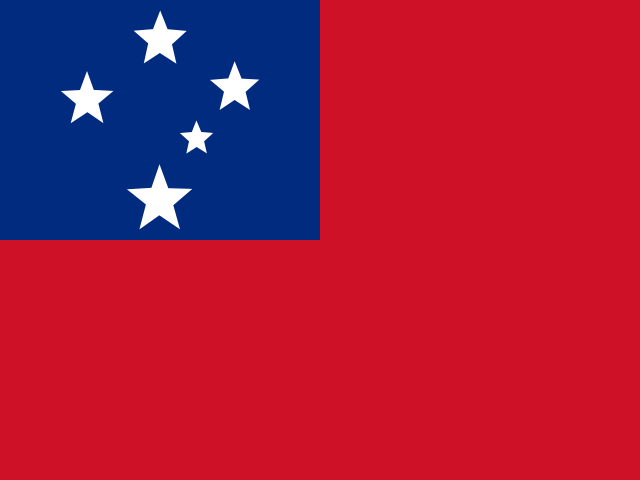

Countries › Oceania
Micronesia
Where Micronesia stands out
▲ MOST
1stMicronesia8,718,973
2nd Palau3,309,368
Palau3,309,368
3rd Maldives2,161,074
Maldives2,161,074
1st of 192 · Central Intelligence Agency (CIA) World Factbook and World Bank (derived), 2024
▲ MOST
1stMicronesia92.03%
2nd Suriname91.99%
Suriname91.99%
3rd Gabon91.55%
Gabon91.55%
1st of 192 · Food and Agriculture Organization (FAO) Global Forest Resources Assessment 2025, 2020
▲ MOST
9th Norway49.1
Norway49.1
10thMicronesia49.0
11th

Samoa46.610th of 171 · FAO Food Balance Sheets, 2023
▲ MOST
13th Mexico3,187,013
Mexico3,187,013
14thMicronesia3,007,718
15th Denmark2,638,178
Denmark2,638,178
14th of 191 · Marine Regions, World Exclusive Economic Zone (EEZ) version 12, 2023
Size, sea and borders
701 km²177th of 195
Sea area it controlsMarine Regions, World EEZ version 12, 2023 · doi.org
3,007,718 km²14th of 191
6,112 kilometres (km)20th of 193
Coastline for its sizeCIA World Factbook and World Bank (derived), 2024 · web.archive.org (cia.gov)
8,718,973 m per 1,000 km²1st of 192
Number of land bordersGeoNames, 2026-08 · download.geonames.org
0158th of 195, tied with 37
Land and height
782 m163rd of 194
92.0% of land1st of 192
People
112,630 people181st of 195
Population densityWorld Bank, WDI, 2023 · data.worldbank.org
161 people per km²57th of 192
22.9 years135th of 195
67.2 years151st of 195
Years longer women live than menUN World Population Prospects 2024, 2023 · population.un.org
7.619th of 195
Share of its people living abroadUnited Nations Department of Economic and Social Affairs (UN DESA) International Migrant Stock 2024, 2020 · un.org
11.8%46th of 193
Food, power and travel
Wild fish caughtFAO, via World Bank, WDI, 2024 · data.worldbank.org
208,701 tonnes60th of 194
18.5 kg per person a year53rd of 170
Poultry supplyFAO Food Balance Sheets, 2023 · bulks-faostat.fao.org
37.6 kg per person a year39th of 171
Fish & seafood supplyFAO Food Balance Sheets, 2023 · bulks-faostat.fao.org
49.0 kg per person a year10th of 171
55.4 kg per person a year45th of 171
7159th of 189, tied with 3
Football and chess
Football internationals played, all timeInternational football results (martj42), 2026 · github.com
7191st of 193
See all 94 facts about Micronesia
Showing 20 highlights for Micronesia. Rank counts from the highest value among the countries that have data: 1st is the most. Ties share a rank. Data version 91, 22 November 2026.
Sort Micronesia against four others
The game has figures for Micronesia on 129 of its 190 questions.
The same game for Android and iOS. It launches on 10 December 2026.
Out now.